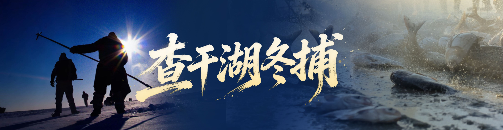
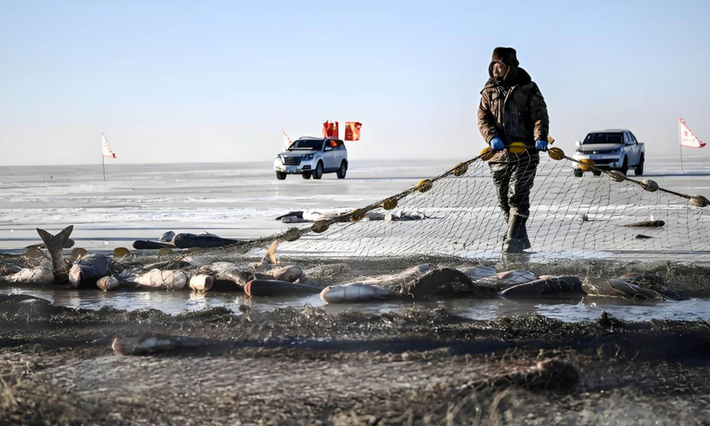

木驴一圈圈拉动，力量汇聚在冰面之上。渔民们使用传统的木驴（一种绞盘装置）拉动渔网，将分散在湖中的渔网逐渐收拢。这个过程需要团队协作，大家齐心协力将渔网拉到冰面。
合围收网的过程中，渔民们会将渔网的两端固定在木驴上，然后通过转动木驴来拉动渔网。随着木驴的转动，渔网会逐渐收拢，将湖中的鱼群包围在渔网中。
合围收网是一项体力活，需要渔民们齐心协力才能完成。当渔网被拉到冰面时，渔民们会兴奋地欢呼，因为这意味着他们的辛勤劳动即将得到回报。